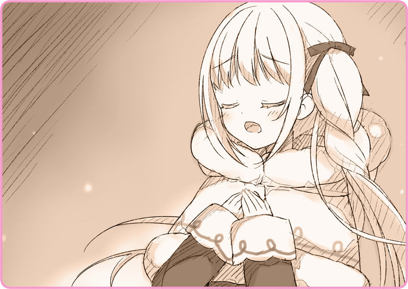

Về đến nhà Haizakura thì trời đã tối hẳn. Đêm đông tại Altaria tới trong nháy mắt. Vừa trưa còn hửng nắng mà giờ đây tuyết đã bắt đầu rơi rồi.
“Không biết chủ nhân cậu đã về chưa nhỉ?”
“Người ấy không nói là bao giờ về à?”
Lilia thở dài. Là tại Haizakura vô tư hay tại người chủ nhân kia quá ung dung vậy?
“Chủ nhân cậu là tiến sĩ Tohma đó ấy hả?”
“Là sao?”
“Sao nhỉ… người ấy coi bộ có tư tưởng cấp tiến ra phết.”
Haizakura vừa nói vừa cười. Xem ra chủ nhân của em cũng có phần lập dị đây.
“... A?”
Tại ngã rẽ, có một người đàn ông bước ra từ trong con hẻm như thể muốn chắn đường họ.
Người đàn ông đó tạng người to cao, mặc một chiếc áo khoác cổ dày. Mũ gã đội che khuất đôi mắt nên khó mà nhìn ra biểu cảm cho được.
“Có khi nào… người đó là tiến sĩ Tohma hả?”
“Hơ, không phải sao…?”
Haizakura khẽ nghiêng đầu.
Một cơn ớn lạnh chạy dọc sống lưng Lilia.
“... Là ai?”
Cô dừng bước chất vấn, tay nắm lấy cổ áo Haizakura để ngăn không cho em đi tiếp.
“Cô mang tới một Hình nhân cao cấp ra trò đấy chứ.”
Giọng trầm thấp, người đàn ông cười mà như đang gầm gừ.
“Tiểu thư Lilia phải không nhỉ. Tôi đã lo lắm đấy, chẳng cách gì liên lạc được với cô cả.”
“Ông… lẽ nào là…”
Lilia có vẻ đã luận ra được danh tính của gã này.
Cô nhận thấy mồ hôi đang dần túa ra từ bàn tay mình.
“Tôi nghe đồn rằng có một cô bé dẫn theo Hình nhân. Tôi thấy nghi nghi nên mới đi theo xem sao.”
“... Tôi cũng có lý do riêng chứ. Xin lỗi vì đã để ông chờ.”
“Ồ, vậy ra tiểu thư đây cần chuẩn bị nhỉ. Vậy cô đã sẵn sàng chưa?”
“Đã muộn thế này rồi. Phiền ông quay lại lần sau.”
“Vậy sao, thế thì tiếc quá… Thôi đành, hôm nay tôi tới cũng chỉ là để chào một tiếng thôi mà.”
Người đàn ông nọ cởi mũ và lịch sự cúi chào.
Sau đó, gã rảo bước trên nền tuyết để tiếp cận cả hai, tay trình ra một tấm danh thiếp.
“... Nếu là thông tin liên lạc thì tôi có rồi.”
“Nào, cứ cầm đi. Đừng quên liên lạc với tôi đấy.”
“......”
Lilia nhận luôn tấm danh thiếp mà không cần nhìn.
“Phải công nhận, tôi chưa thấy con Hình nhân này bao giờ đâu đấy. Hay thật, chẳng khác nào con người…”
Gã nhìn chằm chằm vào Haizakura đang đứng cạnh cô.
“Không cần.”
Khi Haizakura định tự giới thiệu, Lilia đã cản lại.
“Mình về thôi.”
Cô cố gắng thoát khỏi nơi ấy thật nhanh.
“Chúc hai người một ngày tốt lành.”
Người đàn ông nọ không bám theo nữa.
Lilia chẳng buồn nhìn lại. Cô kéo tay Haizakura và khẩn trương rời đi.
＊ ＊ ＊
Haizakura dọn bữa tối với súp và bánh mì đơn giản. Đang chầm chậm đưa thìa lên miệng, em đột nhiên hỏi.
“Ừ… đại loại vậy.”
“Haizakura, không được làm vậy.”
“Lần sau mà có gặp người đó thì nhớ phải gọi tớ đấy.”
Em tuy cười nhưng xem ra lại chẳng hiểu gì mấy.
Ở điểm này thì quả thật em rất giống một Hình nhân. Không chút thận trọng hay cảnh giác, cứ thế tin vào lời Lilia nói.
“Haizakura cứ như trẻ con ấy nhỉ.”
“... Thôi, mấy chuyện kiểu thế tớ cũng không muốn nghe…”
“À không… không có gì đâu, đừng để ý.”
“Haizakura, hôm nay cậu đã di chuyển nhiều như vậy thì…”
Mỉm cười, em hút lấy thứ chất lỏng trông như dầu bằng một cái ống hút giấy.
Dường như đó chính là nhiên liệu, và chiếc ống khói sau lưng em chầm chậm xả ra những làn khói mỏng.
Hương quế nhẹ nhàng lan tỏa. Chắc vì vẫn còn sót lại chút trà thảo mộc.
“Cảm ơn nhé, Haizakura.”
Sau khi dùng bữa xong, Lilia bất ngờ buông lời cảm tạ.
Đương dọn bát đĩa, Haizakura ra chiều không hiểu.
“Vì đã cho tớ ở lại qua đêm, vì đã chuẩn bị bữa ăn ngon thế này, và vì số tiền kia nữa…”
Em cười bẽn lẽn, nhưng đâu đó vẫn có nét tự hào.
“Liệu có cách nào để tớ đền đáp không?”
“Nhưng không làm thế thì tớ thấy tội lỗi lắm.”
Haizakura nghĩ ngợi một hồi, và—
Em mạnh dạn gợi ý.
“Hát ư?”
“Chỉ thế thôi có được không? Nếu cậu thích…”
“Vậy hả? Thế thì…”
Cô trầm tư một lúc.
Lilia nhớ lại những lời từng trao đổi tại đài quan sát ban trưa.
“Bài [Pháo hoa trời đông] thì sao?”
“Có hơi khác một xíu. Tên là pháo hoa nhưng không phải hát về pháo hoa thật, mà về ngày đông giá rét… Giải thích sao đây nhỉ…”
Chừng như cảm thấy khó diễn giải, cô khẽ nghiêng đầu.
“... Mà thôi, giải thích về bài này nghe ngớ ngẩn lắm. Nếu được thì tớ cứ hát tặng cậu đã. Cậu nghe nhé?”
Đôi bàn tay nhỏ bé của Haizakura vỗ vào nhau liên hồi.
Đôi chân khép lại, hai tay đặt lên đầu gối, tư thế lắng nghe đã sẵn sàng.
“... Ừm…”
Lilia đằng hắng vài lần.
Cô hít lấy không khí ẩm mà ấm xung quanh lò sưởi.
“～～～♪”
Cô đặt hai tay lên ngực, và bắt đầu cất giọng ca.

“～～～♪ ～～～♪”
Thoạt đầu cô chỉ ngồi hát.
Nhưng vì muốn truyền tải bài hát theo cách thoải mái hơn, thành thử đến hồi để ý thì cô đã đứng lên tự lúc nào.
Pháo hoa trời đông.Phép nhiệm mầu lấp lánh trên bầu trời đêm.Hãy tỏa ra ánh sáng bao bọc lấy chúng tôi…
Đây là bài hát đã được Đoàn ca kịch nữ Levaljak biểu diễn trong một thời gian dài.
“～～～♪”
Khúc giả thanh cuối cùng vang lên.
Như thường làm ở ca đoàn, cô lịch sự cúi đầu cảm ơn.
Tựa hồ bị choáng ngợp, đôi mắt của Haizakura ánh lên vẻ kinh ngạc.
“Cậu cứ nói quá.”
Em ra sức diễn tả niềm hưng phấn của mình.
Lilia tuy hơi ngượng, song thấy rằng cảm giác ấy cũng không tệ chút nào.
“Thế này… là được rồi hả?”
“Tớ cũng muốn hát thêm cho cậu nghe lắm… cơ mà muộn rồi.”
“Thì… vất vả cũng phải thôi. Bao nhiêu chuyện xảy ra rồi mà.”
“A, chờ đã…”
Miệng cười thật tươi, em hướng về phía phòng ngủ.
Rồi bất chợt nghĩ ra gì đó, em quay ngoắt lại.
“Hả?”
“Ừ thì, đúng là lần đầu cậu hát nghe thảm họa thật…”
“Thì… cũng có thể…”
“Ừ… một lần nữa, cùng nhau hát nhé?”
Em cúi đầu, rồi lại hướng tới phòng ngủ.
“......”
Lồng ngực Lilia nhói lên.
Biết làm sao đây. Cô không thể cứ mãi nhận lấy thành ý của cô bé ấy được. Chẳng bao lâu nữa tiến sĩ Tohma sẽ trở về.
“... Xin lỗi, Haizakura.”
Cô xin lỗi bằng tông giọng cơ hồ sẽ tan biến trong phút chốc.
“Tớ, chỉ toàn nói dối cậu thôi…”
Người nghe thấy những lời đó, chỉ có duy nhất cô Hình nhân yên lặng ngồi trên chiếc xe lăn đặt ở góc phòng. Cô nhắm mắt, tựa như đang say ngủ.

 “Mình cũng chẳng rõ nữa. Ngài ấy bảo chỉ ra ngoài một lúc thôi.”
“Mình cũng chẳng rõ nữa. Ngài ấy bảo chỉ ra ngoài một lúc thôi.”